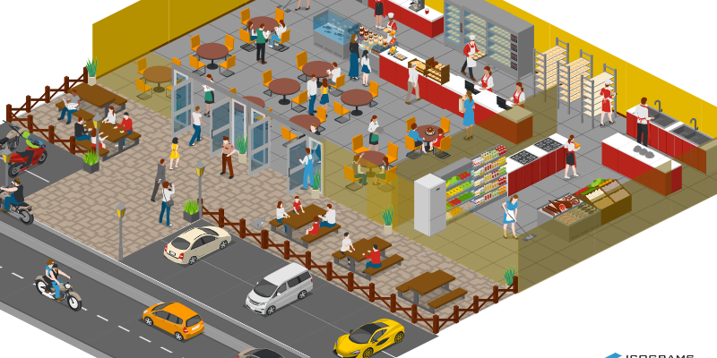
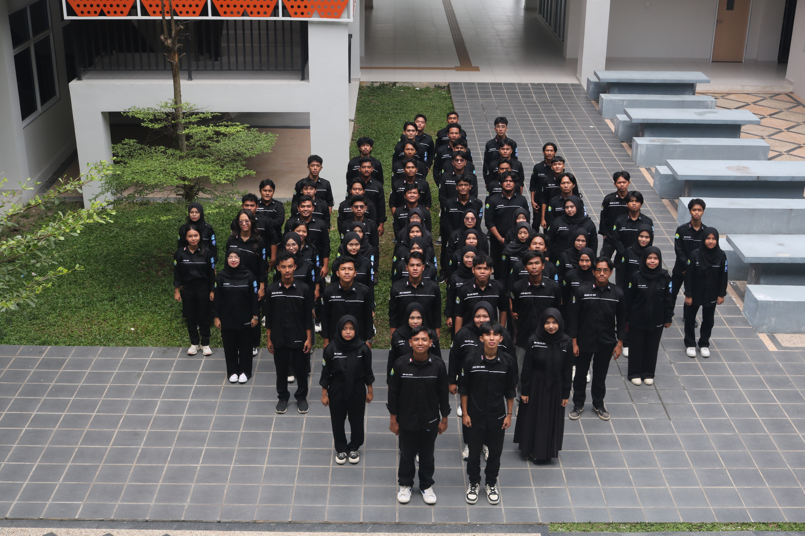

HELLO WORD
I'm Auzia Natasa
Student of Riau University.
Student of Riau University.

Website ini dibuat menggunakan Wordpress Pada Mata Kuliah Pemprograman Berbasis Platform

Pembuatan Animasi ini menrupakan tugas pada Mata Kuliah Pemrograman Berorientasi Objek.

SMA NEGERI 2 TELUK KUANTAN merupakan sekolah yang telah memberikan banyak pengalaman yang luar biasa, baik dalam pendidikan, organisasi, dan perjuangan menuju Universitas.

Universitas Riau menjadi pilihan Untuk melanjutkan pendidikan dengan memilih fakultas teknik dan Jurusan Teknik Elektro, Program Studi S1 Teknik Informatika.